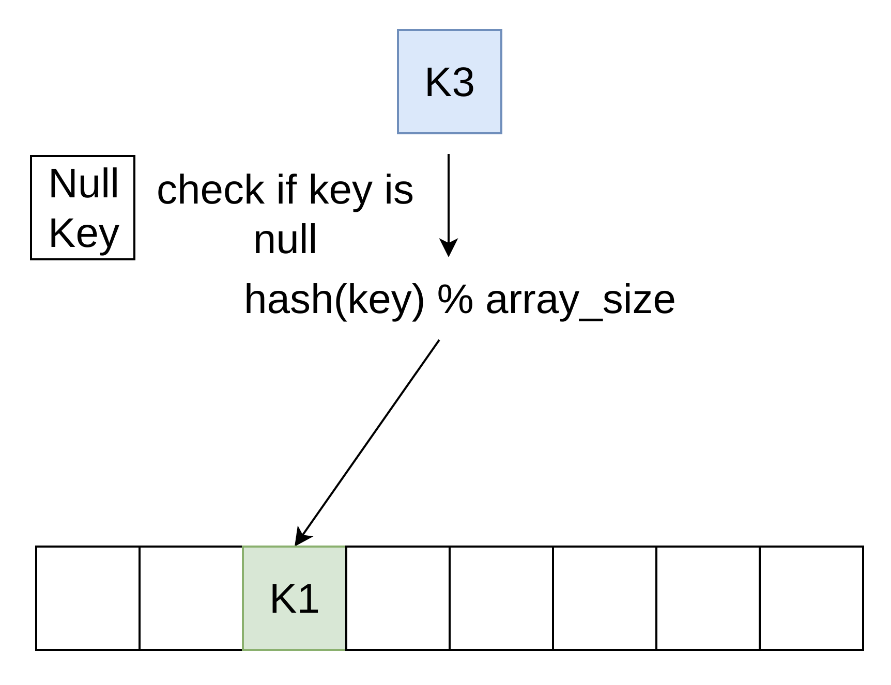

Хэш таблица

1. Введение в хэш-таблицы.
2. Основные вопросы дизайна.
3. Бенчмарки.
4. C++ дизайн хэш-таблицы.
GROUP BY
JOIN
SELECT DISTINCT
Основные методы
1. Хэш-функция.
2. Способ разрешения коллизий.
3. Ресайз.
4. Способ размещения ячеек в памяти.
1. Не использовать identity функцию для целочисленных типов.
2. Не использовать хэш-функции для строк (CityHash) для целочисленных типов.
3. Не использовать криптографические хэш-функции если вас не атакуют. Например вычисление SipHash ~980 MB/s. CityHash ~9 GB/s.
4. Не использовать устаревшие хэш-функции. FNV1a.
По умолчанию в ClickHouse плохие хэш-функции
1. crc32_c для целочисленных типов. одна интсркция (на самом деле две) процессора latency 3 такта.
2. Специальная хэш функция для строк. Стандартно можно использовать CityHash, xxHash, wyhash.
https://github.com/ClickHouse/ClickHouse/blob/master/src/Common/HashTable/Hash.h
1. Метод цепочек (Chaining).
2. Открытая адресация (Open Addressing).
3. Хорошие в теории (Cuckoo hashing, Hopscotch hashing, 2-choice hashing). Обычно либо тяжело реализуемые, либо медленные за счет дополнительных фетчей из памяти.

Пример: std::unordered_map
1. Стабильность указателей на ключ, значение.
2. Возможность хранить большие объекты, неперемещаемые объекты.
3. Хорошо работает с плохой хэш-функцией, высоким load_factor.
5. Очень сильно тормозит. Нагружает аллокатор (даже просто вызов функции дорого для hot path).
Линейный пробы (Linear probing). Кэш локальность. Требует аккуратного выбора хэш-функции.
Пример: ClickHouse HashMap, Abseil HashMap.
Квадратичные пробы (Quadratic probing).
Пример: Google DenseHashMap, LLVM DenseHashMap
Во сколько раз
1. По степеням двойки (ClickHouse HashMap, Abseil HashMap, Google DenseHashMap). Быстрое деление по модулю
size_t place = hash & (size - 1)
2. На размер простого числа близкого к степени двойки. Медленное деление даже с constant switch, libdivide но есть ещё fastrange.
При каком load_factor
0.5 хороший вариант для линейных проб с шагом 1. Минус максимальный оверхед по оперативной памяти х4.
ClickHouse HashMap, Google DenseHashMap использует 0.5.
Abseil HashMap использует 0.875.

1. Просить клиента выбрать ключи который никогда не будет использоваться, для пустого значения и удаленного.
2. Отдельно обрабатывать пустое значение. Как быть с удалением ? (Если оно нужно).
3. Использовать трюки для сжатого хранения метадаты и данных.
Просить клиента выбрать ключи который никогда не будет использоваться, для пустого значения и удаленного.

Отдельно обрабатывать пустое значение и не хранить его в хэш таблице. Как быть с удалением ? (Если оно нужно)
Пример: ClickHouse HashMap.
Использовать трюки для сжатого хранения метадаты и данных. Abseil HashMap.
Пример: Abseil HashMap.
Удаление реализовано только для линейного пробирования.
https://en.wikipedia.org/wiki/Linear_probing#Deletion https://github.com/ClickHouse/ClickHouse/blob/master/src/Common/HashTable/HashTable.h
Такое ощущение, что в интернете каждый написал свою самую быструю хэш-таблицу.


Тестировать хэш-таблицы на случайных целочисленных значениях.
Тестировать хэш-таблицы без учета максимального load_factor, memory consumption.
Тестировать и не показывать код бенчмарка.
На реальных сценариях и на реальных данных. В ClickHouse реальный сценарий - агрегация данных.
wget https://datasets.clickhouse.tech/hits/partitions/hits_100m_obfuscated_v1.tar.xz
https://clickhouse.tech/docs/en/operations/performance-test/ https://github.com/ClickHouse/ClickHouse/blob/master/src/Common/examples/integer_hash_tables_benchmark.cpp
WatchID почти все значения уникальные. Размер хэш таблицы 20714865 элементов. Это ~316 MB, не влазит в LL кэши.
| ClickHouse HashMap: | 7.366 сек. |
| Google DenseMap: | 10.089 сек. |
| Abseil HashMap: | 9.011 сек. |
| std::unordered_map: | 44.758 сек. |
При выходе за LL кэши вся производительность упирается в доступ к памяти.
Деструктор std::unordered_map занял больше времени чем бенчмарки остальных таблиц.
perf stat -e cache-misses:u ./integer_hash_tables_and_hashes
| ClickHouse HashMap: | 329,664,616 |
| Google DenseMap: | 383,350,820 |
| Abseil HashMap: | 415,869,669 |
| std::unordered_map: | 1,939,811,017 |
Latency Comparison Numbers ---------------------------------- L1 cache reference 0.5 ns Branch mispredict 5 ns L2 cache reference 7 ns 14x L1 cache Mutex lock/unlock 25 ns Main memory reference 100 ns 20x L2 cache, 200x L1 cache Compress 1K bytes with Zippy 3,000 ns 3 us Send 1K bytes over 1 Gbps network 10,000 ns 10 us Read 4K randomly from SSD* 150,000 ns 150 us ~1GB/sec SSD Read 1 MB sequentially from memory 250,000 ns 250 us Round trip within same datacenter 500,000 ns 500 us
RegionID часто повторяющиеся значения. Размер хэш таблицы 9040 элементов. Влазит в LL кэши.
| ClickHouse HashMap: | 0.201 сек. |
| Google DenseMap: | 0.261 сек. |
| Abseil HashMap: | 0.307 сек. |
| std::unordered_map: | 0.466 сек. |
1. Hash
2. Allocator
3. Cell
4. Grower (интерфейс для ресайза)
5. HashTable
Hash
Такой же как std::hash.
template <typename T>
struct Hash
{
size_t operator() (T key) const
{
return DefaultHash<T>(key);
}
};
Allocator
Почти такой же как std::allocator, за исключением использования mmap, mrepmap для больших кусков памяти.
Есть аллокатор изначально выделяющий память на стэке:
AllocatorWithStackMemory<HashTableAllocator, initial_bytes>;
Cell
struct HashTableCell <KeyType, MappedType, HashTableState>
{
...
const KeyType & getKey() const { return key; }
bool keyEquals(const Key & key_) const;
MappedType getMapped() const { return {}; }
void setHash(size_t hash_value) {}
size_t getHash(const Hash & hash) const { return hash(key); }
bool isZero(const State & state);
void setZero();
...
};
Grower
struct HashTableGrower
{
size_t place(size_t x) const;
size_t next(size_t pos) const;
bool overflow(size_t element) const;
void increaseSize();
void set(size_t new_elements_size);
};
HashTable. Основная задача предоставить клиенту интерфейс хэш-таблицы используя Hash, Allocator, Grower, Cell
template
<
typename Key,
typename Cell,
typename Hash,
typename Grower,
typename Allocator
>
class HashTable :
protected Hash,
protected Allocator,
protected Cell::State;
protected ZeroValueStorage<Cell::need_zero_value_storage, Cell>
Возможность передавать кастомный Grower.
1. Передаем Grower с фиксированным размером и без ресайза и разрешения цепочек коллизий получаем Lookup таблицу.
2. Передаем Grower с шагом не 1. Например передаем шаг 2 и получаем хэш-таблицу использующую квадратичные пробы.
Возможность хранить состояние в ячейке.
Сохранять хэш. Используется для строковых хэш таблиц.
struct HashMapCellWithSavedHash : public HashMapCell
{
size_t saved_hash;
void setHash(size_t hash_value) { saved_hash = hash_value; }
size_t getHash(const Hash &) const { return saved_hash; }
};
https://github.com/ClickHouse/ClickHouse/blob/master/src/Common/HashTable/HashMap.h
Быстроочищаемая хеш таблица. Храним в ячейке версию хэш-таблицы. При проверке пустая ячейка или нет, дополнительно сравниваем версии.
struct FixedClearableHashMapCell
{
struct ClearableHashSetState
{
UInt32 version = 1;
};
using State = ClearableHashSetState;
bool isZero(const State & st) const { return version != st.version; }
void setZero() { version = 0; }
};
https://github.com/ClickHouse/ClickHouse/blob/master/src/Common/HashTable/FixedClearableHashMap.h
LRUCache. Храним в ячейке 2 указателя на предыдущее и следующее значение для интрузивного листа. Во время перемещения элементов хеш таблица нотифицирует ячейку.
struct LRUHashMapCell
{
static bool constexpr need_to_notify_cell_during_move = true;
static void move(LRUHashMapCell * old_loc, LRUHashMapCell * new_loc)
LRUHashMapCell * next = nullptr;
LRUHashMapCell * prev = nullptr;
};
https://github.com/ClickHouse/ClickHouse/blob/master/src/Common/HashTable/LRUHashMap.h
LRUCache. Используем boost::intrusive::list.
using LRUList = boost::intrusive::list
<
Cell,
boost::intrusive::value_traits<LRUHashMapCellIntrusiveValueTraits>,
boost::intrusive::constant_time_size<false>
>;
LRUList lru_list;
https://github.com/ClickHouse/ClickHouse/blob/master/src/Common/HashTable/LRUHashMap.h https://www.boost.org/doc/libs/1_76_0/doc/html/intrusive.html
SmallTable
Состоит из вектора на 10 элементов помещается в L1 кэш. Поиск линейный.
https://github.com/ClickHouse/ClickHouse/blob/master/src/Common/HashTable/SmallTable.h
StringHashTable
Состоит из 4 хэш таблиц:
1. Хэш таблица для строк размером 0-8 байт.
2. Хэш таблица для строк размером 9-16 байт.
3. Хэш таблица для строк размером 17-24 байта.
4. Хэш таблица для строк размером больше 24 байт.
https://www.researchgate.net/publication/339879042_SAHA_A_String_Adaptive_Hash_Table_for_Analytical_Databases https://github.com/ClickHouse/ClickHouse/blob/master/src/Common/HashTable/StringHashTable.h
TwoLevelHashTable
Состоит из 256 хэш таблиц:
На вставке ключа мы вычисляем индекс хэш таблицы в которую будем вставлять ключ.
size_t getBucketFromHash(size_t hash_value) {
return (hash_value >> (32 - BITS_FOR_BUCKET)) & MAX_BUCKET;
}
Соединение хэш-таблиц происходит в несколько потоков
https://github.com/ClickHouse/ClickHouse/blob/master/src/Common/HashTable/TwoLevelHashTable.h.h
Мы написали самую лучшую хэш-таблицу (*)
* на нашем сценарии аггрегации данных